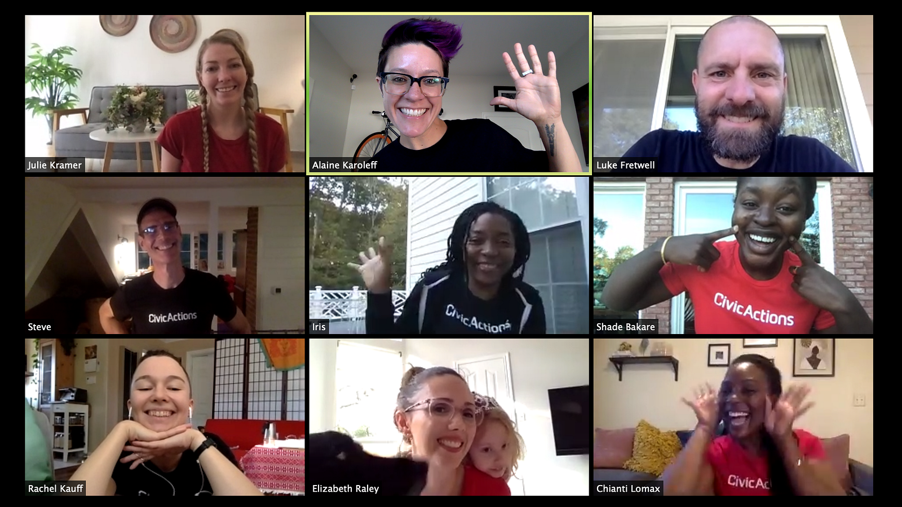
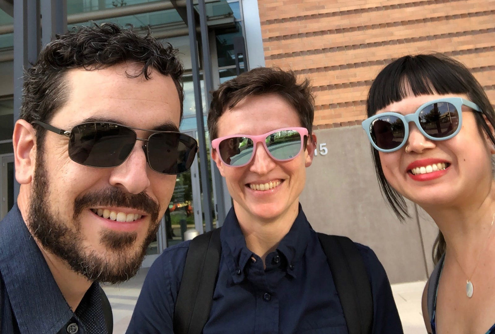
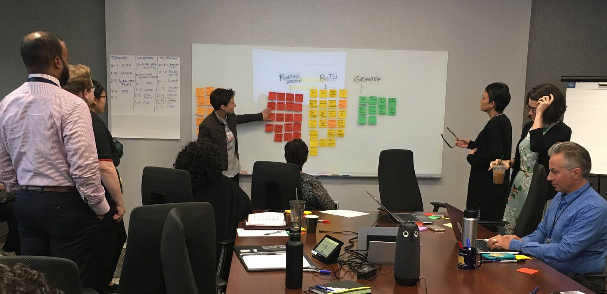
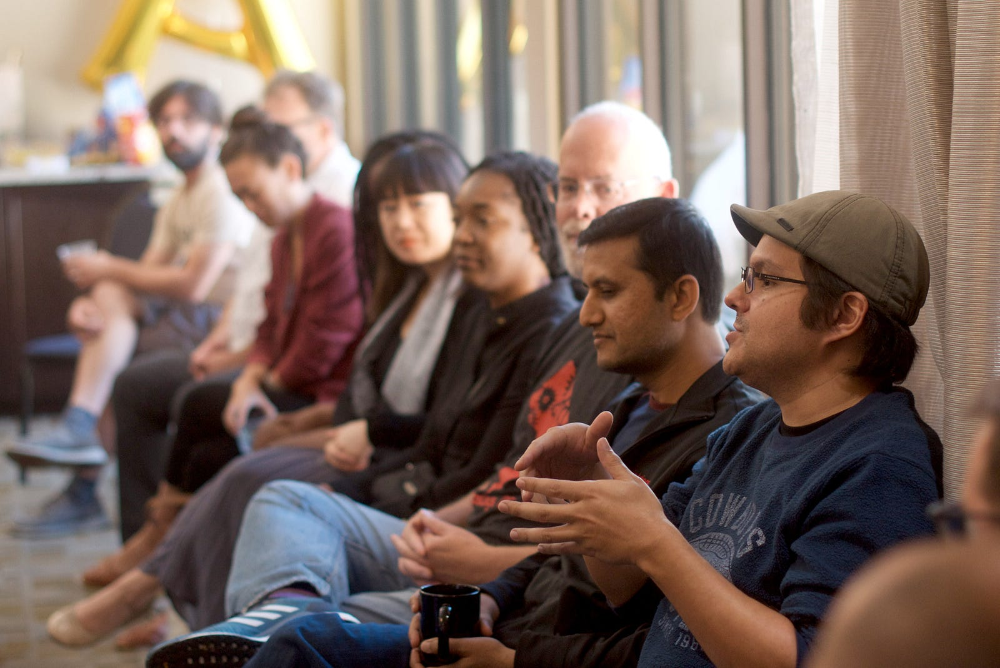
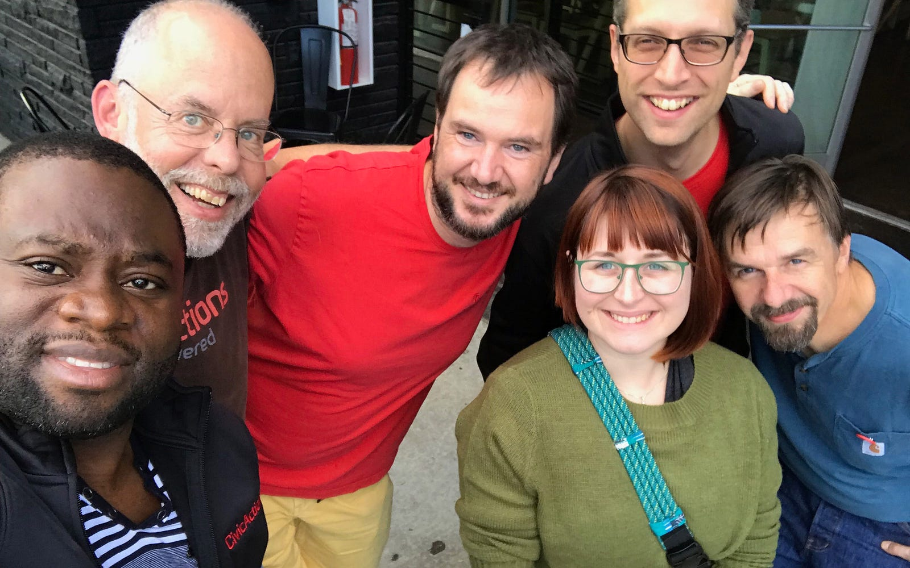
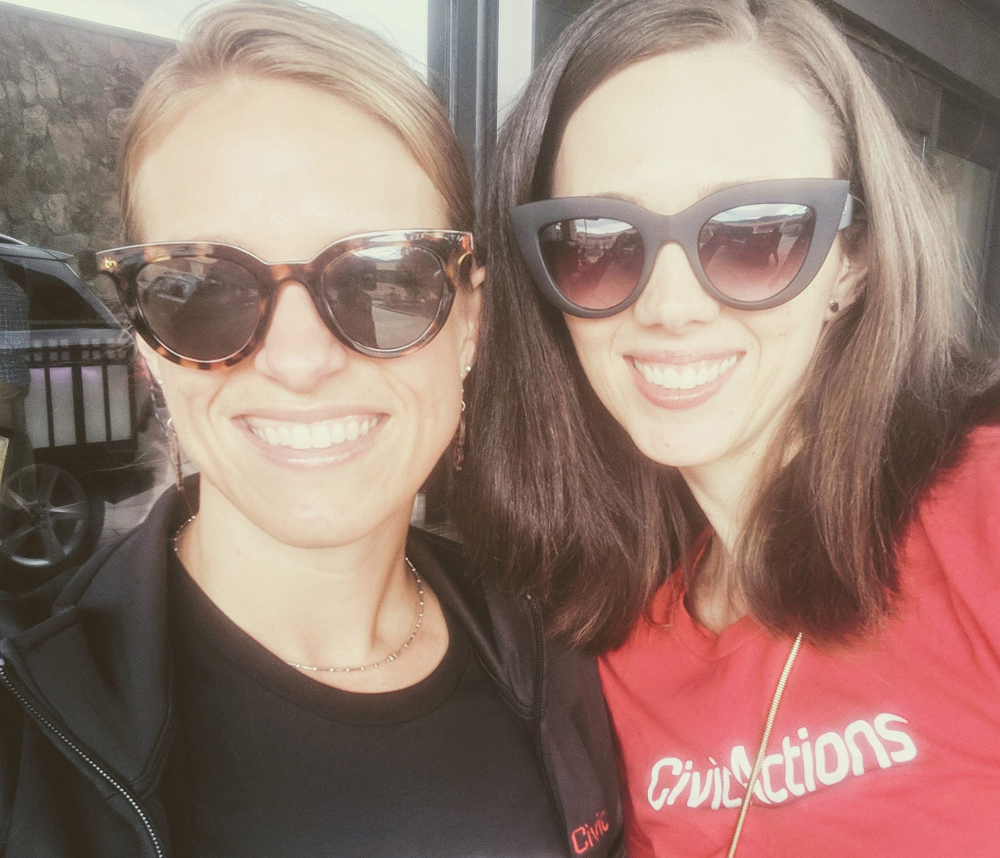

Consider us strange, but we love the hiring process. Whether or not we’re talking to the exact right person for the job, we like hearing from interesting folks who share our determination to make life better for people through technology and smart design. Reciprocity is an important element of hiring, and we want both our applicants and the hiring team to have the chance to share and learn about each other. To that end, we recently re-engineered our hiring process to ensure it reflects our values and brings us in contact with a wide spectrum of people who can bring their unique talent and experience to government projects.
Maybe you’re one of them! If you’re looking for a job where you can grow and learn while being part of impactful projects, we hope you’ll apply for one of our open positions. But we also know that writing the initial application can be the hardest part. To make things easier, we’ve put together some tips to help you:
- Understand why we ask the questions we do
- See how you fit into our open, inclusive culture
- Make your best introduction through your resume
- See how our hiring process supports both you and our team
We want you to be your (whole) self
We believe that people are happier and do their best when they can be themselves at work. That’s why we consider the open ended questions, like “Tell us a little bit about yourself!” an essential part of the application — we genuinely want to know who you are as a person. This approach benefits our company and our clients as much as it benefits the individuals who are empowered to bring their creative energy to work each day.
The people on our team are much more than a set of skills, and we’re interested in learning about the unique path that brought you to the point of applying. Rather than omitting those four seemingly irrelevant years you spent in the Peace Corps, or your passion for rehabilitating injured emus, why not share the experiences? You might also share your LinkedIn, personal website, personal projects, unusual talent, or anything else that makes you … you!

Your passions matter
At CivicActions, we are committed to doing work that makes a positive impact on our community and the world. For us, that means transforming government services through free and open source software, agile methodologies, and human-centered values. Do you have something you care deeply about? We’re eager to hear about your ideas and passions and discover how they might integrate with our work … so please, tell us more.

EQ is just as important as IQ
Of course your skills and technical expertise are important, but before we even get down to the nitty gritty, we want to learn about the more nuanced aspects of how you relate to others, how you handle stressful situations, how you respond to failure, and how well you communicate — often referred to as emotional intelligence (EQ). We use the first ‘work style’ interview to dig into questions that help us see how your personality aligns with our culture of openness, transparency, and trust.

Tell us a story (or three)
Hardly anyone likes talking or writing about themselves, but you’re going through an application process, so humor us by getting specific about your experiences and qualifications. This doesn’t mean a long list of bullet points, but we do want to hear detailed examples of how you solved a difficult problem, handled a tricky communication breakdown, or came up with a solution that helped people (or programs) work better together. Telling your stories helps us understand the ‘special sauce’ you might add to the team.

Mind the details
The most heartbreaking thing for our hiring team is when they get an interesting applicant who makes a basic error that prevents us from moving forward with their application. Here’s a shortlist of common mistakes to avoid and things to remember as you apply:
- Make sure you’ve uploaded the correct resume to the right job
- Tailor your resume to the job posting to help us see how your skills align
- Keep your resume concise — because 50-page resumes are hard to read!
- Show — don’t just tell — us about your skills by providing links to projects or further descriptions about your past work in your resume

We’re always looking for passionate, genuine people focused on making an impact through meaningful work. Does this resonate with you? Check out our open positions and take our hiring process for a test drive! You can also comment below to give feedback or tell us your own great ideas to make hiring better for government digital services.